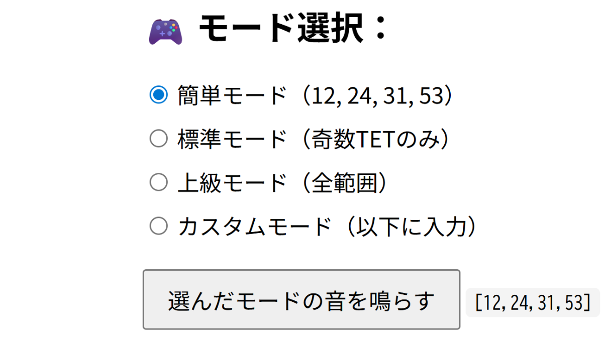

Reiji's
Explorations
in Sound & Structure
Home
>
Apps and Experimental Tools
Apps and Experimental Tools

May 26, 2025
Developing an Ear Training App for TET Identification
This document records the development of a tuning identification application created in collaboration with AI.Using JavaScript, HTML, and CSS, a quiz-style ear training app was developed in which the user listens to a tone and guesses which equal...